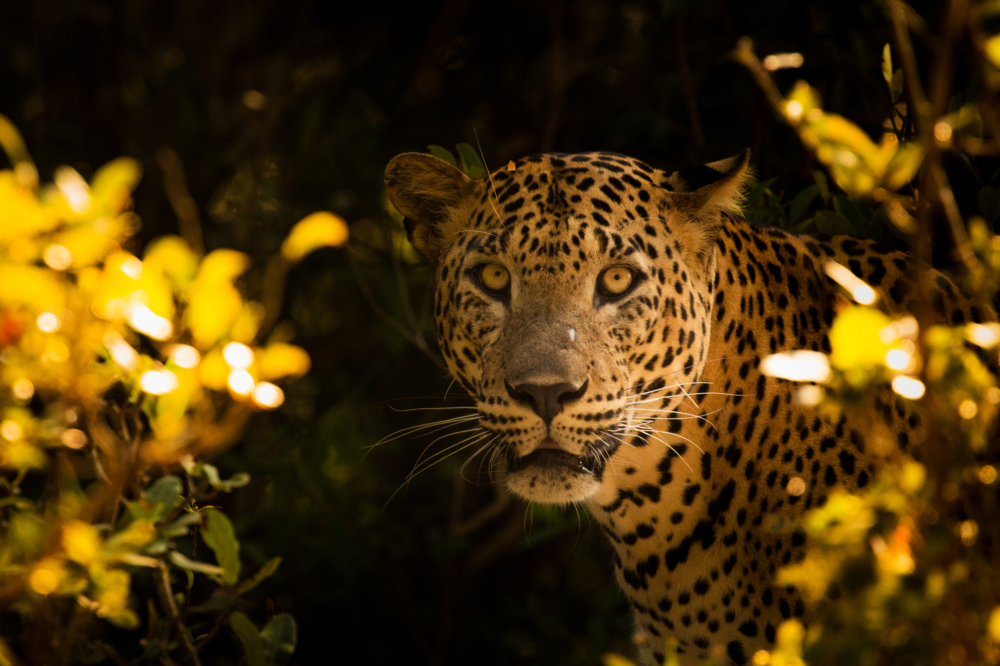
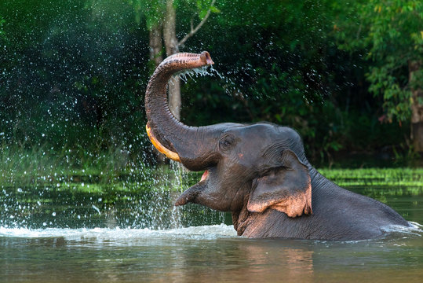
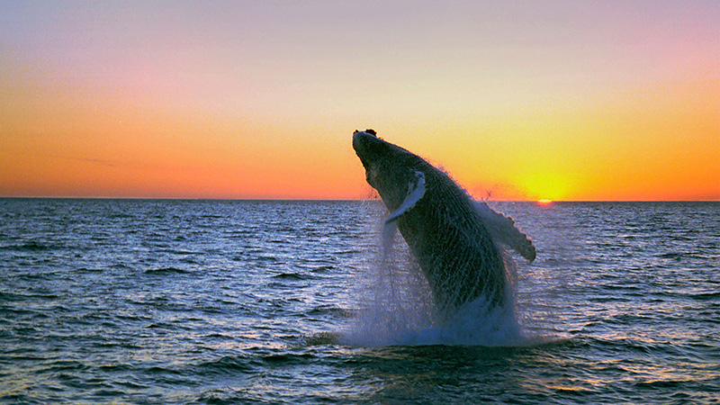
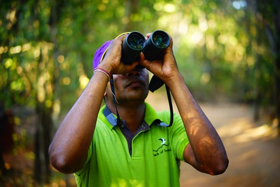

Journey into the heart of Sri Lanka's untamed landscapes. Our expert-led private safaris offer intimate encounters with leopards, elephants, and blue whales in their natural habitats—all while supporting conservation efforts.
Plan Your Safari AdventureDiscover the magnificent wildlife that makes Sri Lanka one of Asia's premier safari destinations, with some of the highest densities of key species in the world.

Yala & Wilpattu National Parks
With one of the highest leopard densities in the world, Sri Lanka offers unparalleled opportunities to observe these majestic predators in their natural habitat.

Minneriya, Udawalawe & Kaudulla
Witness the spectacular "Gathering" where hundreds of elephants congregate, or observe family herds in protected parks throughout the island.

Mirissa & Trincomalee Coast
Experience the awe of encountering the largest animal on Earth in the deep waters off Sri Lanka's coast, one of the world's best whale watching destinations.
From dense dry zone forests to coastal wilderness, each park offers unique ecosystems and wildlife viewing opportunities.
Best for: Leopard sightings
Best for: Elephant encounters
Best for: Wilderness experience

Our wildlife tours are led by certified naturalists with decades of field experience. They don't just show you animals—they help you understand behaviors, ecosystems, and conservation stories.
"We don't chase wildlife. We observe, understand, and respect. That's when the true magic happens."
A sample journey blending Sri Lanka's premier wildlife destinations with comfortable lodges and strategic timing for optimal viewing.
Welcome to Sri Lanka. Briefing with your wildlife expert. Overnight in Colombo with optional birding in city wetlands.
Early morning and late afternoon safaris in Yala. Focus on leopard tracking. Night drives available (seasonal).
Transfer to Udawalawe. Afternoon safari for elephant herds. Visit Elephant Transit Home rehabilitation center.
Explore UNESCO-listed rainforest with endemic birds and rare amphibians. Guided night walks for nocturnal species.
Morning whale watching in Mirissa (Nov-Apr) or birding in Bundala (May-Oct). Transfer to airport for departure.
We believe in responsible tourism that benefits both visitors and wildlife, supporting conservation while providing unforgettable experiences.
We employ local guides and support community-run conservation initiatives.
A portion of every safari supports reforestation and anti-poaching efforts.
Private or small group tours minimize disturbance to wildlife and habitats.
Our guides educate visitors about conservation challenges and solutions.
Connect with Sri Lanka's magnificent wildlife through expert-led, ethical safaris. Share your wildlife interests, and we'll craft your perfect safari experience.
Sustainable Tourism: A portion of your tour supports wildlife conservation projects in Sri Lanka.